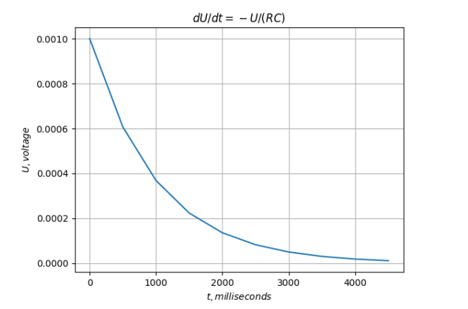

Описание: GNU Octave — свободная программная система для математических вычислений, использующая совместимый с MATLAB язык высокого уровня.
Процесс разрядки конденсатора описывается уравнением, приведенным ниже. Где - мгновенное значение напряжения на конденсаторе, – сопротивление, – емкость конденсатора. Будем считать, что в начальный момент времени В. Полагаем, что Ом, мкФ. Построить график зависимости функции от времени.
Процесс разрядки конденсатора описывается уравнением, приведенным ниже. Где - мгновенное значение напряжения на конденсаторе, – сопротивление, – емкость конденсатора. Будем считать, что в начальный момент времени В. Полагаем, что Ом, мкФ. Построить график зависимости функции от времени.
'''parameters'''
C = 10e-6 # Capacitance 10 microfarad
R = 100000000 # MicroOhm resistance
U0 = 100 # Instantaneous Voltage across the capacitor
'''сapacitor discharge process'''
N = 10 # interval
T = 500 # milliseconds
t = np.zeros(N + 1)
q = np.zeros(N + 1)
for i in range(0, N):
t[i + 1] = T*i
q = C*U0*np.exp( -t/(R*C) )
plt.plot(t, q)
plt.xlabel(r'$t, milliseconds$')
plt.ylabel(r'$U, voltage$')
plt.title(r'$dU/dt = -U/(RC)$')
plt.grid(True)
